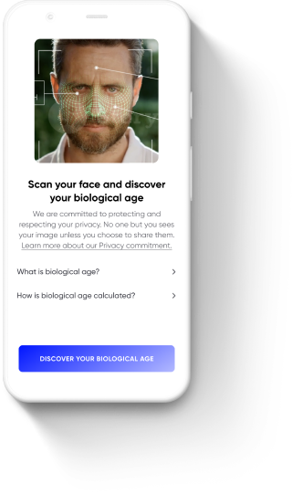
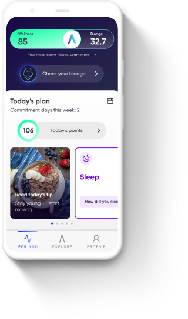
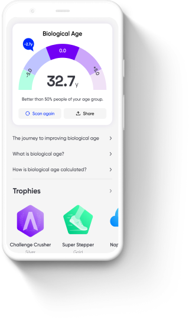

Take control of your biological age with Aspire2B
You know how old we are according to the calendar, but do you know how old you really are? Discover and take control of your biological age with our personalized lifestyle plan.
About the app
proprietary technology to uncover bioage
personalized plan to help you reach your goals...
...and track your results
Note: Screen shots from USA Aspire2B app, slight variations exist for different regions
Biological age is sometimes called "functional" age because it describes how well your body and mind are functioning compared to peers at the same chronological age. Do you know how you rate? Knowing where you start out can help you decide which small changes you want to make for big differences in your overall health.
Aspire2B uses a myriad of inputs and proprietary technology and algorithms to calculate your biological age. Inputs include answers to your lifestyle questionnaire, biometric measurements (e.g. blood pressure, heart rate, HRV), and steps and walking speed. Based on your responses, Aspire2B delivers structured programs to help reduce your biological age. The face scan technology does not take or store a picture of you, but rather is measuring the blood flow under your skin to determine different markers of health.
To improve the quality of lifestyle interventions provided and inform research questions regarding the improvement of biological age and behavior, Aspire2B will collect in app user data over a period of 4 weeks (28 days). By using the app, you consent to and authorize Aspire2B to use your information for research purposes. This information is always de-identified (coded) and does not include protected health information. The main purpose of this research study is to test if the application works as intended. The study protocol has been revised and approved by respective regional research ethics boards.
For more information please read the Terms of Use and Privacy Policy document below that relates to you and your Aspire2B app:
Aspire2B US Terms of Use and Privacy Policy Aspire2B India (Quaker) Terms of Use and Privacy Policy